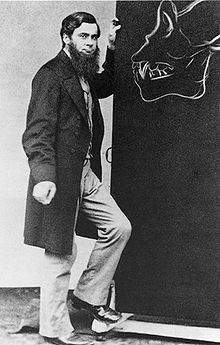

Thursday, October the 9th, 2014
back to: title, date or indexes
In 1871, T. H. Huxley was invited to join a committee for the investigation of Spiritualist phenomena. He declined, writing:
supposing the phenomena to be genuine—they do not interest me. If anybody would endow me with the faculty of listening to the chatter of old women and curates in the nearest cathedral town, I should decline the privilege, having better things to do.
And if the folk in the spiritual world do not talk more wisely and sensibly than their friends report them to do, I put them in the same category.
The only good that I can see in a demonstration of the truth of ‘Spiritualism’ is to furnish an additional argument against suicide. Better live a crossing-sweeper than die and be made to talk twaddle by a ‘medium’ hired at a guinea a séance.
Quoted in The Founders Of Psychical Research by Alan Gauld (Routledge & Kegan Paul, 1968)

T. H. Huxley : Victorian with beard